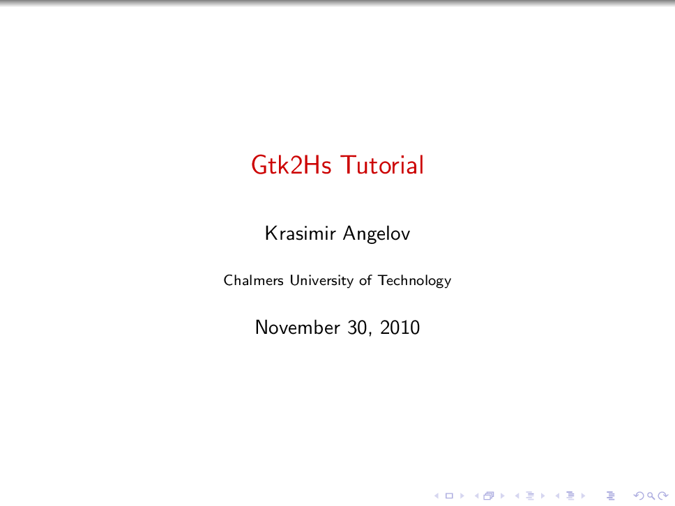

<table  style='font-size:18px;background:#444A3F;' ><tr><td  id='notme' ><a href='pdf/06A-gtk2hs.pdf'></a></td><td  id='notme' ><a href='pdf/14-10-27_Li_GarbageCollection.pdf'></a></td><td  id='notme' ><a href='pdf/14-11-10_Zhou_ApplicativeFunctors.pdf'></a></td><td  id='notme' ><a href='pdf/1709.01810.pdf'></a></td><td  id='notme' ><a href='pdf/1803.10195.pdf'></a></td><td  id='notme' ><a href='pdf/1810.13430.pdf'></a></td></tr><tr><td  id='notme' ><a href='pdf/240h_notes_FUNCTIONAL_SYSTEMS_IN_HASKELL.pdf'></a></td><td  id='notme' ><a href='pdf/34-gradient.pdf'></a></td><td  id='notme' ><a href='pdf/3d_rotation_in_exponential_coordinates.pdf'></a></td><td  id='notme' ><a href='pdf/3ptcubic.pdf'></a></td><td  id='notme' ><a href='pdf/AG.pdf'></a></td><td  id='notme' ><a href='pdf/AM221_lecture10.pdf'></a></td></tr><tr><td  id='notme' ><a href='pdf/AM221_lecture9.pdf'></a></td><td  id='notme' ><a href='pdf/APL2IDIOMS.pdf'></a></td><td  id='notme' ><a href='pdf/APLNote.pdf'></a></td><td  id='notme' ><a href='pdf/ASpecificationforDependentTypesinHaskell.pdf'></a></td><td  id='notme' ><a href='pdf/A_comparison_of_C_concepts_and_Haskell_type_classe.pdf'></a></td><td  id='notme' ><a href='pdf/Abikoff.pdf'></a></td></tr><tr><td  id='notme' ><a href='pdf/Agda_Intro.pdf'></a></td><td  id='notme' ><a href='pdf/An_Infinitely_Large_Napkin.pdf'></a></td><td  id='notme' ><a href='pdf/Applicative.pdf'></a></td><td  id='notme' ><a href='pdf/B-AP85-LucidDataflow.pdf'></a></td><td  id='notme' ><a href='pdf/BHANDARI.pdf'></a></td><td  id='notme' ><a href='pdf/B_Casselman_Mathematical_Illustrations_manual_of_geometry_and_PostScript_Cambridge.pdf'></a></td></tr><tr><td  id='notme' ><a href='pdf/Beamer_Template_handout.pdf'></a></td><td  id='notme' ><a href='pdf/Bilforms.pdf'></a></td><td  id='notme' ><a href='pdf/BilinearForms_corrected.pdf'></a></td><td  id='notme' ><a href='pdf/CIS_9_2_02.pdf'></a></td><td  id='notme' ><a href='pdf/CS448B-20091021-GraphsAndTrees.pdf'></a></td><td  id='notme' ><a href='pdf/Chebyshev_Polynomials.pdf'></a></td></tr><tr><td  id='notme' ><a href='pdf/ComputationalGeometryAlgorithmsandApplications3rdEd.pdf'></a></td><td  id='notme' ><a href='pdf/ComputationalGeometryinC.pdf'></a></td><td  id='notme' ><a href='pdf/Computational_Conformal_Geometry_Applied_in_Engine.pdf'></a></td><td  id='notme' ><a href='pdf/CppLambda_GoodNote.pdf'></a></td><td  id='notme' ><a href='pdf/Crane_OverviewConformalGeometryProcessing_SGP.pdf'></a></td><td  id='notme' ><a href='pdf/Crossproduct.pdf'></a></td></tr><tr><td  id='notme' ><a href='pdf/DemirLeung_GRO.pdf'></a></td><td  id='notme' ><a href='pdf/Dissertation_Rieck_2017.pdf'></a></td><td  id='notme' ><a href='pdf/DyalogProgrammingReferenceGuide.pdf'></a></td><td  id='notme' ><a href='pdf/ElispCheatSheet.pdf'></a></td><td  id='notme' ><a href='pdf/Ellipse-and-EllipticCurves.pdf'></a></td><td  id='notme' ><a href='pdf/EuroVis2018_4D.pdf'></a></td></tr><tr><td  id='notme' ><a href='pdf/FingerTree.pdf'></a></td><td  id='notme' ><a href='pdf/FirstFundamentalForm.pdf'></a></td><td  id='notme' ><a href='pdf/Fortune87-SweepLine-Voronoi.pdf'></a></td><td  id='notme' ><a href='pdf/FunctionalReporting.pdf'></a></td><td  id='notme' ><a href='pdf/Functional_Reporting.pdf'></a></td><td  id='notme' ><a href='pdf/GeoC-Voronoi-algorithms.pdf'></a></td></tr><tr><td  id='notme' ><a href='pdf/GimbalLockPresentationJan2016.pdf'></a></td><td  id='notme' ><a href='pdf/Gu-theory.pdf'></a></td><td  id='notme' ><a href='pdf/Guide2.pdf'></a></td><td  id='notme' ><a href='pdf/Haskell-User-Survey-Results.pdf'></a></td><td  id='notme' ><a href='pdf/HaskellArticles-1.pdf'></a></td><td  id='notme' ><a href='pdf/HaskellCheatSheet.pdf'></a></td></tr><tr><td  id='notme' ><a href='pdf/HaskellNotesForProfessionals.pdf'></a></td><td  id='notme' ><a href='pdf/Haskell_users_guide.pdf'></a></td><td  id='notme' ><a href='pdf/Hopf-fibration_Treisman.pdf'></a></td><td  id='notme' ><a href='pdf/Hopf-lecture_notes.pdf'></a></td><td  id='notme' ><a href='pdf/Implicit_Curves_and_Surfaces_Mathematics_DataStructures_and_Algorithms_Gomes.pdf'></a></td><td  id='notme' ><a href='pdf/Introduction_to_differential_geometry.pdf'></a></td></tr><tr><td  id='notme' ><a href='pdf/J602_RefCard_color_letter_current.pdf'></a></td><td  id='notme' ><a href='pdf/Jacobian2011-2011.pdf'></a></td><td  id='notme' ><a href='pdf/Jacobian_matrix.pdf'></a></td><td  id='notme' ><a href='pdf/JavaGenerics.pdf'></a></td><td  id='notme' ><a href='pdf/JavaVisitorPattern.pdf'></a></td><td  id='notme' ><a href='pdf/JforC20071003.pdf'></a></td></tr><tr><td  id='notme' ><a href='pdf/LaTeX_symbols.pdf'></a></td><td  id='notme' ><a href='pdf/LightWeight_extension_record.pdf'></a></td><td  id='notme' ><a href='pdf/LongestIncreasingSubsequence.pdf'></a></td><td  id='notme' ><a href='pdf/LuaTeX(1).pdf'></a></td><td  id='notme' ><a href='pdf/Lyons_Elem-intro-Hopf-fibration.pdf'></a></td><td  id='notme' ><a href='pdf/MAT4144_5158_Introduction_to_Lie_Groups.pdf'></a></td></tr><tr><td  id='notme' ><a href='pdf/MasteringDyalogAPL.pdf'></a></td><td  id='notme' ><a href='pdf/Math501X_GaussBonnet.pdf'></a></td><td  id='notme' ><a href='pdf/MeshDataStructures.pdf'></a></td><td  id='notme' ><a href='pdf/MethodofSteepestDescent.pdf'></a></td><td  id='notme' ><a href='pdf/MinimumEditDistance.pdf'></a></td><td  id='notme' ><a href='pdf/MonadReader_good.pdf'></a></td></tr><tr><td  id='notme' ><a href='pdf/Monadic_Parsing_in_haskell_pearl.pdf'></a></td><td  id='notme' ><a href='pdf/NumericalRecipesinC.pdf'></a></td><td  id='notme' ><a href='pdf/OerstedMedalLecture.pdf'></a></td><td  id='notme' ><a href='pdf/OpenPatternMatching.pdf'></a></td><td  id='notme' ><a href='pdf/Opengl_GLSL_Good_Book.pdf'></a></td><td  id='notme' ><a href='pdf/PacificVis2018_Fullerene_Fragmentation.pdf'></a></td></tr><tr><td  id='notme' ><a href='pdf/PatternClassification.pdf'></a></td><td  id='notme' ><a href='pdf/PrefixSumBlelloch.pdf'></a></td><td  id='notme' ><a href='pdf/ProjectiveGeometry.pdf'></a></td><td  id='notme' ><a href='pdf/QR_modifed_gram_smitd_algo.pdf'></a></td><td  id='notme' ><a href='pdf/RIDE_User_Guide.pdf'></a></td><td  id='notme' ><a href='pdf/Real-Time-Fluid-Dynamics.pdf'></a></td></tr><tr><td  id='notme' ><a href='pdf/SLIM2017.pdf'></a></td><td  id='notme' ><a href='pdf/Section_3.9--Polynomial_Rings.pdf'></a></td><td  id='notme' ><a href='pdf/Shape-polymorphic.pdf'></a></td><td  id='notme' ><a href='pdf/SkewMatrix_CrossProduct.pdf'></a></td><td  id='notme' ><a href='pdf/Spivac_text1.pdf'></a></td><td  id='notme' ><a href='pdf/StateMachine1.pdf'></a></td></tr><tr><td  id='notme' ><a href='pdf/StreamFusion.pdf'></a></td><td  id='notme' ><a href='pdf/The_C_Programming_Language.pdf'></a></td><td  id='notme' ><a href='pdf/Timo_Maarse___s4416295___Parsing_with_derivatives_in_Haskell.pdf'></a></td><td  id='notme' ><a href='pdf/TopoInVis2017_Skeletons.pdf'></a></td><td  id='notme' ><a href='pdf/Try44.pdf'></a></td><td  id='notme' ><a href='pdf/Tweedale-TamingCMonster.pdf'></a></td></tr><tr><td  id='notme' ><a href='pdf/UA-Valeriote.pdf'></a></td><td  id='notme' ><a href='pdf/Uniformization-2016-Henri-Paul-de-Saint-Gervais.pdf'></a></td><td  id='notme' ><a href='pdf/Verified_Programming_in_Agda.pdf'></a></td><td  id='notme' ><a href='pdf/Vis2017_Networks.pdf'></a></td><td  id='notme' ><a href='pdf/ad-hoc-polymorphism.pdf'></a></td><td  id='notme' ><a href='pdf/affine.pdf'></a></td></tr><tr><td  id='notme' ><a href='pdf/affine_aron.pdf'></a></td><td  id='notme' ><a href='pdf/agda.pdf'></a></td><td  id='notme' ><a href='pdf/agda_good_tutorial.pdf'></a></td><td  id='notme' ><a href='pdf/agda_simple_tutorial.pdf'></a></td><td  id='notme' ><a href='pdf/agda_tutoria3.pdf'></a></td><td  id='notme' ><a href='pdf/agda_tutoria5.pdf'></a></td></tr><tr><td  id='notme' ><a href='pdf/agda_tutorial.pdf'></a></td><td  id='notme' ><a href='pdf/agda_tutorial5.pdf'></a></td><td  id='notme' ><a href='pdf/agda_tutorial_good2.pdf'></a></td><td  id='notme' ><a href='pdf/agda_user_manual.pdf'></a></td><td  id='notme' ><a href='pdf/algebra13_rotation_group.pdf'></a></td><td  id='notme' ><a href='pdf/algebraSystemHaskell.pdf'></a></td></tr><tr><td  id='notme' ><a href='pdf/algebra_geometry_conformal_mapping.pdf'></a></td><td  id='notme' ><a href='pdf/algebra_probability.pdf'></a></td><td  id='notme' ><a href='pdf/algebra_programming_functional.pdf'></a></td><td  id='notme' ><a href='pdf/algebraic_geometry_best.pdf'></a></td><td  id='notme' ><a href='pdf/algebraic_number.pdf'></a></td><td  id='notme' ><a href='pdf/algebraic_topology_allen_hatcher.pdf'></a></td></tr><tr><td  id='notme' ><a href='pdf/algprog.pdf'></a></td><td  id='notme' ><a href='pdf/amsthdoc.pdf'></a></td><td  id='notme' ><a href='pdf/apl_ReferenceCard.pdf'></a></td><td  id='notme' ><a href='pdf/apl_dyalog_direct_function.pdf'></a></td><td  id='notme' ><a href='pdf/apl_reference_card.pdf'></a></td><td  id='notme' ><a href='pdf/apl_symbol_apl_character.pdf'></a></td></tr><tr><td  id='notme' ><a href='pdf/arctan.pdf'></a></td><td  id='notme' ><a href='pdf/aron_gram_schmidt.pdf'></a></td><td  id='notme' ><a href='pdf/arrow_programming_afp-arrows.pdf'></a></td><td  id='notme' ><a href='pdf/awesome_table_in_pdf.pdf'></a></td><td  id='notme' ><a href='pdf/baastad.pdf'></a></td><td  id='notme' ><a href='pdf/backwardsubstitute.pdf'></a></td></tr><tr><td  id='notme' ><a href='pdf/bfc00.pdf'></a></td><td  id='notme' ><a href='pdf/bfc01.pdf'></a></td><td  id='notme' ><a href='pdf/bfc02.pdf'></a></td><td  id='notme' ><a href='pdf/bfc04.pdf'></a></td><td  id='notme' ><a href='pdf/bigpage.pdf'></a></td><td  id='notme' ><a href='pdf/bilinear_sesquilinear_form.pdf'></a></td></tr><tr><td  id='notme' ><a href='pdf/bilinearforms1.pdf'></a></td><td  id='notme' ><a href='pdf/bin_2704.pdf'></a></td><td  id='notme' ><a href='pdf/bridging-the-gap-between-haskell-and-java.pdf'></a></td><td  id='notme' ><a href='pdf/building_microservices.pdf'></a></td><td  id='notme' ><a href='pdf/c_linked_list.pdf'></a></td><td  id='notme' ><a href='pdf/c_linked_list_2.pdf'></a></td></tr><tr><td  id='notme' ><a href='pdf/calabi_yau_manifold.pdf'></a></td><td  id='notme' ><a href='pdf/calculus_on_manifolds.pdf'></a></td><td  id='notme' ><a href='pdf/category-theory-for-programmers_Bartosz_Milewski.pdf'></a></td><td  id='notme' ><a href='pdf/category_def.pdf'></a></td><td  id='notme' ><a href='pdf/category_definition_MIT_note.pdf'></a></td><td  id='notme' ><a href='pdf/category_functor.pdf'></a></td></tr><tr><td  id='notme' ><a href='pdf/centercolumnmatrix.pdf'></a></td><td  id='notme' ><a href='pdf/cg17.pdf'></a></td><td  id='notme' ><a href='pdf/chap04.pdf'></a></td><td  id='notme' ><a href='pdf/chap16.pdf'></a></td><td  id='notme' ><a href='pdf/check_line_intersection.pdf'></a></td><td  id='notme' ><a href='pdf/colinear_point.pdf'></a></td></tr><tr><td  id='notme' ><a href='pdf/colinear_point_aron.pdf'></a></td><td  id='notme' ><a href='pdf/colinear_points_and_line_intersection_aron.pdf'></a></td><td  id='notme' ><a href='pdf/color_theorem.pdf'></a></td><td  id='notme' ><a href='pdf/common_lisp_a_genetle_introduction_to_symbolic_computation.pdf'></a></td><td  id='notme' ><a href='pdf/complex_differentiability_tsogtgerel_gantumur.pdf'></a></td><td  id='notme' ><a href='pdf/complex_number_circle.pdf'></a></td></tr><tr><td  id='notme' ><a href='pdf/computational_geometry_cmsc754-lects.pdf'></a></td><td  id='notme' ><a href='pdf/compute_determiant.pdf'></a></td><td  id='notme' ><a href='pdf/computer_vision.pdf'></a></td><td  id='notme' ><a href='pdf/computional_conformal_geometry.pdf'></a></td><td  id='notme' ><a href='pdf/concrete_mathematics_Donald_Knuth.pdf'></a></td><td  id='notme' ><a href='pdf/concrete_mathematics_Donald_Knuth_good.pdf'></a></td></tr><tr><td  id='notme' ><a href='pdf/connect_eqation_underbrace.pdf'></a></td><td  id='notme' ><a href='pdf/continuous_function.pdf'></a></td><td  id='notme' ><a href='pdf/coordinates.pdf'></a></td><td  id='notme' ><a href='pdf/coplanar.pdf'></a></td><td  id='notme' ><a href='pdf/cpo.pdf'></a></td><td  id='notme' ><a href='pdf/cross_ratio_good.pdf'></a></td></tr><tr><td  id='notme' ><a href='pdf/css_cross_origin_attack.pdf'></a></td><td  id='notme' ><a href='pdf/cubic_equation.pdf'></a></td><td  id='notme' ><a href='pdf/curvature.pdf'></a></td><td  id='notme' ><a href='pdf/danielsson-norell-mixfix.pdf'></a></td><td  id='notme' ><a href='pdf/delaunary_trigulationa.pdf'></a></td><td  id='notme' ><a href='pdf/designing-data-intensive-applications.pdf'></a></td></tr><tr><td  id='notme' ><a href='pdf/determinant_function.pdf'></a></td><td  id='notme' ><a href='pdf/determinant_linearity.pdf'></a></td><td  id='notme' ><a href='pdf/dfns.pdf'></a></td><td  id='notme' ><a href='pdf/diff.pdf'></a></td><td  id='notme' ><a href='pdf/differentiate_vector.pdf'></a></td><td  id='notme' ><a href='pdf/direct_sum.pdf'></a></td></tr><tr><td  id='notme' ><a href='pdf/dorst-mann-I.pdf'></a></td><td  id='notme' ><a href='pdf/dorst-mann-II.pdf'></a></td><td  id='notme' ><a href='pdf/dual_space.pdf'></a></td><td  id='notme' ><a href='pdf/dual_space2.pdf'></a></td><td  id='notme' ><a href='pdf/dynamic_programming.pdf'></a></td><td  id='notme' ><a href='pdf/easy1_differential_geometry.pdf'></a></td></tr><tr><td  id='notme' ><a href='pdf/easy_differential_geometry.pdf'></a></td><td  id='notme' ><a href='pdf/easyj.pdf'></a></td><td  id='notme' ><a href='pdf/eigenface.pdf'></a></td><td  id='notme' ><a href='pdf/eindige_delingsring_is_lichaam.pdf'></a></td><td  id='notme' ><a href='pdf/emacs_elisp.pdf'></a></td><td  id='notme' ><a href='pdf/emacs_shortcut_key.pdf'></a></td></tr><tr><td  id='notme' ><a href='pdf/enuemerative_combinatorics.pdf'></a></td><td  id='notme' ><a href='pdf/essence-of-ad-icfp.pdf'></a></td><td  id='notme' ><a href='pdf/exManifolds.pdf'></a></td><td  id='notme' ><a href='pdf/fast_prime_algorithm.pdf'></a></td><td  id='notme' ><a href='pdf/flashcard.pdf'></a></td><td  id='notme' ><a href='pdf/flatplane.pdf'></a></td></tr><tr><td  id='notme' ><a href='pdf/fourie_series_for_periodic_functions.pdf'></a></td><td  id='notme' ><a href='pdf/functional_c.pdf'></a></td><td  id='notme' ><a href='pdf/functional_programming_with_bananas_lenses_envelopes_barbed_wire.pdf'></a></td><td  id='notme' ><a href='pdf/functor_applicative.pdf'></a></td><td  id='notme' ><a href='pdf/fundeps.pdf'></a></td><td  id='notme' ><a href='pdf/gameinhaskell-sample.pdf'></a></td></tr><tr><td  id='notme' ><a href='pdf/geometry.pdf'></a></td><td  id='notme' ><a href='pdf/gl-view.pdf'></a></td><td  id='notme' ><a href='pdf/glcurves.pdf'></a></td><td  id='notme' ><a href='pdf/good_sesquilinear.pdf'></a></td><td  id='notme' ><a href='pdf/gradient.pdf'></a></td><td  id='notme' ><a href='pdf/group_action0.pdf'></a></td></tr><tr><td  id='notme' ><a href='pdf/haddock.pdf'></a></td><td  id='notme' ><a href='pdf/haskell-decorator-paper.pdf'></a></td><td  id='notme' ><a href='pdf/haskell2010.pdf'></a></td><td  id='notme' ><a href='pdf/haskell_Craft.pdf'></a></td><td  id='notme' ><a href='pdf/haskell_compiler.pdf'></a></td><td  id='notme' ><a href='pdf/haskell_from_basic_advance.pdf'></a></td></tr><tr><td  id='notme' ><a href='pdf/haskell_functor_monad_definition.pdf'></a></td><td  id='notme' ><a href='pdf/haskell_monad_defintion.pdf'></a></td><td  id='notme' ><a href='pdf/haskell_note.pdf'></a></td><td  id='notme' ><a href='pdf/haskell_note_good_must_read.pdf'></a></td><td  id='notme' ><a href='pdf/haskell_number.pdf'></a></td><td  id='notme' ><a href='pdf/haskell_opengl.pdf'></a></td></tr><tr><td  id='notme' ><a href='pdf/haskell_opengl_good_book.pdf'></a></td><td  id='notme' ><a href='pdf/haskell_programming_with_nested_types_a_principled_approach.pdf'></a></td><td  id='notme' ><a href='pdf/haskell_road_to_logic_math.pdf'></a></td><td  id='notme' ><a href='pdf/haskell_tutorial_good.pdf'></a></td><td  id='notme' ><a href='pdf/haskell_tutorial_stephen_diehl.pdf'></a></td><td  id='notme' ><a href='pdf/hatex-guide.pdf'></a></td></tr><tr><td  id='notme' ><a href='pdf/hofp_fibration.pdf'></a></td><td  id='notme' ><a href='pdf/hopf_fibrations_baldwin_jonathan_vrs-report.pdf'></a></td><td  id='notme' ><a href='pdf/idea.pdf'></a></td><td  id='notme' ><a href='pdf/ill_matrix.pdf'></a></td><td  id='notme' ><a href='pdf/image_interpolation.pdf'></a></td><td  id='notme' ><a href='pdf/image_process1.pdf'></a></td></tr><tr><td  id='notme' ><a href='pdf/improving-smt-types.pdf'></a></td><td  id='notme' ><a href='pdf/incremental_triangulation.pdf'></a></td><td  id='notme' ><a href='pdf/indexWhatIdidtoday.pdf'></a></td><td  id='notme' ><a href='pdf/integral_and_Eculidean_domain.pdf'></a></td><td  id='notme' ><a href='pdf/intersectionLine.pdf'></a></td><td  id='notme' ><a href='pdf/interview.pdf'></a></td></tr><tr><td  id='notme' ><a href='pdf/introduction_categories_good_note_MIT.pdf'></a></td><td  id='notme' ><a href='pdf/inverse_matrix2.pdf'></a></td><td  id='notme' ><a href='pdf/julia-tutorial.pdf'></a></td><td  id='notme' ><a href='pdf/label_eqation.pdf'></a></td><td  id='notme' ><a href='pdf/lambda_calculus_Lecture02.pdf'></a></td><td  id='notme' ><a href='pdf/lambda_calculus_Lecture03.pdf'></a></td></tr><tr><td  id='notme' ><a href='pdf/lambda_calculus_standfordLectures01.pdf'></a></td><td  id='notme' ><a href='pdf/lambda_calculus_standfordLectures02.pdf'></a></td><td  id='notme' ><a href='pdf/lambda_calculus_standfordLectures03.pdf'></a></td><td  id='notme' ><a href='pdf/lambda_calculus_standfordLectures04.pdf'></a></td><td  id='notme' ><a href='pdf/lambda_calculus_standfordLectures05.pdf'></a></td><td  id='notme' ><a href='pdf/lambda_calculus_standfordLectures06.pdf'></a></td></tr><tr><td  id='notme' ><a href='pdf/lambda_calculus_standfordLectures07.pdf'></a></td><td  id='notme' ><a href='pdf/lambda_calculus_standfordLectures08.pdf'></a></td><td  id='notme' ><a href='pdf/lambda_calculus_standfordLectures09.pdf'></a></td><td  id='notme' ><a href='pdf/lambda_calculus_standfordLectures10.pdf'></a></td><td  id='notme' ><a href='pdf/lambda_calculus_standfordLectures11.pdf'></a></td><td  id='notme' ><a href='pdf/lambda_calculus_standfordLectures12.pdf'></a></td></tr><tr><td  id='notme' ><a href='pdf/lambda_calculus_standfordLectures13.pdf'></a></td><td  id='notme' ><a href='pdf/lambda_calculus_standfordLectures14.pdf'></a></td><td  id='notme' ><a href='pdf/lambda_calculus_standfordLectures15.pdf'></a></td><td  id='notme' ><a href='pdf/lambda_calculus_standfordLectures16.pdf'></a></td><td  id='notme' ><a href='pdf/lambda_calculus_standfordLectures17.pdf'></a></td><td  id='notme' ><a href='pdf/latex.pdf'></a></td></tr><tr><td  id='notme' ><a href='pdf/latex_Mathmode.pdf'></a></td><td  id='notme' ><a href='pdf/latex_beginner.pdf'></a></td><td  id='notme' ><a href='pdf/latex_category_theory.pdf'></a></td><td  id='notme' ><a href='pdf/latex_emacs_shortcut_key.pdf'></a></td><td  id='notme' ><a href='pdf/latex_indent.pdf'></a></td><td  id='notme' ><a href='pdf/latex_math_unicode_symbol.pdf'></a></td></tr><tr><td  id='notme' ><a href='pdf/latex_reference.pdf'></a></td><td  id='notme' ><a href='pdf/latexnote.pdf'></a></td><td  id='notme' ><a href='pdf/learning_j_programming_language.pdf'></a></td><td  id='notme' ><a href='pdf/lecture.pdf'></a></td><td  id='notme' ><a href='pdf/lecture10.pdf'></a></td><td  id='notme' ><a href='pdf/lecture_8_halfedge_data_structure.pdf'></a></td></tr><tr><td  id='notme' ><a href='pdf/length_curve_x2.pdf'></a></td><td  id='notme' ><a href='pdf/linear_algebra_done_wrong.pdf'></a></td><td  id='notme' ><a href='pdf/linear_space.pdf'></a></td><td  id='notme' ><a href='pdf/linear_type_linear-haskell-popl18-with-appendices.pdf'></a></td><td  id='notme' ><a href='pdf/lnfunc.pdf'></a></td><td  id='notme' ><a href='pdf/lu_derive_triangle_matrix.pdf'></a></td></tr><tr><td  id='notme' ><a href='pdf/lu_factorization.pdf'></a></td><td  id='notme' ><a href='pdf/lu_factorization_good.pdf'></a></td><td  id='notme' ><a href='pdf/luatex.pdf'></a></td><td  id='notme' ><a href='pdf/manifold.pdf'></a></td><td  id='notme' ><a href='pdf/master-thesis.pdf'></a></td><td  id='notme' ><a href='pdf/mathfest-2015.pdf'></a></td></tr><tr><td  id='notme' ><a href='pdf/matplotlib_plot_tutorial.pdf'></a></td><td  id='notme' ><a href='pdf/matrices.pdf'></a></td><td  id='notme' ><a href='pdf/matrixm.pdf'></a></td><td  id='notme' ><a href='pdf/matroid_spanning_tree.pdf'></a></td><td  id='notme' ><a href='pdf/min_edit_string_distance.pdf'></a></td><td  id='notme' ><a href='pdf/minimaltikz.pdf'></a></td></tr><tr><td  id='notme' ><a href='pdf/minipage.pdf'></a></td><td  id='notme' ><a href='pdf/monads_in_haskell_category_theory.pdf'></a></td><td  id='notme' ><a href='pdf/mybook.pdf'></a></td><td  id='notme' ><a href='pdf/mywords.pdf'></a></td><td  id='notme' ><a href='pdf/negative_modulo.pdf'></a></td><td  id='notme' ><a href='pdf/newton_iteration_method.pdf'></a></td></tr><tr><td  id='notme' ><a href='pdf/norm_matrix.pdf'></a></td><td  id='notme' ><a href='pdf/normal_matrix_diagonalizable.pdf'></a></td><td  id='notme' ><a href='pdf/novices-report.pdf'></a></td><td  id='notme' ><a href='pdf/number.pdf'></a></td><td  id='notme' ><a href='pdf/numerical-methods-luatex.pdf'></a></td><td  id='notme' ><a href='pdf/okasaki_functional_data_structure.pdf'></a></td></tr><tr><td  id='notme' ><a href='pdf/opengl_pipe_transformation_good.pdf'></a></td><td  id='notme' ><a href='pdf/orgguide.pdf'></a></td><td  id='notme' ><a href='pdf/pageSize.pdf'></a></td><td  id='notme' ><a href='pdf/paper-05.pdf'></a></td><td  id='notme' ><a href='pdf/paraboloid.pdf'></a></td><td  id='notme' ><a href='pdf/parameterize_circle.pdf'></a></td></tr><tr><td  id='notme' ><a href='pdf/pgfplots.pdf'></a></td><td  id='notme' ><a href='pdf/phonetic_symbol.pdf'></a></td><td  id='notme' ><a href='pdf/polyring.pdf'></a></td><td  id='notme' ><a href='pdf/potts-phd.pdf'></a></td><td  id='notme' ><a href='pdf/povray_tutorial_POVRAY_PeterFischer.pdf'></a></td><td  id='notme' ><a href='pdf/profunctor_optic.pdf'></a></td></tr><tr><td  id='notme' ><a href='pdf/programing_language_cs.pdf'></a></td><td  id='notme' ><a href='pdf/project_matrix.pdf'></a></td><td  id='notme' ><a href='pdf/projection.pdf'></a></td><td  id='notme' ><a href='pdf/projection_matrix.pdf'></a></td><td  id='notme' ><a href='pdf/projectionlatex.pdf'></a></td><td  id='notme' ><a href='pdf/proof_disverge.pdf'></a></td></tr><tr><td  id='notme' ><a href='pdf/prooflog.pdf'></a></td><td  id='notme' ><a href='pdf/prot.pdf'></a></td><td  id='notme' ><a href='pdf/purly_functional_data_structure_chris_okasaki.pdf'></a></td><td  id='notme' ><a href='pdf/quadratic.pdf'></a></td><td  id='notme' ><a href='pdf/quadratic_equation.pdf'></a></td><td  id='notme' ><a href='pdf/quaternion_mynote.pdf'></a></td></tr><tr><td  id='notme' ><a href='pdf/real_number.pdf'></a></td><td  id='notme' ><a href='pdf/real_world_liquid.pdf'></a></td><td  id='notme' ><a href='pdf/regExp.pdf'></a></td><td  id='notme' ><a href='pdf/regexp-play.pdf'></a></td><td  id='notme' ><a href='pdf/relation_algebra.pdf'></a></td><td  id='notme' ><a href='pdf/relation_algebra_2.pdf'></a></td></tr><tr><td  id='notme' ><a href='pdf/representation_theory_note_from_one_guy.pdf'></a></td><td  id='notme' ><a href='pdf/rotate_arbitrary_axis.pdf'></a></td><td  id='notme' ><a href='pdf/skript.pdf'></a></td><td  id='notme' ><a href='pdf/snippet.pdf'></a></td><td  id='notme' ><a href='pdf/snippet2.pdf'></a></td><td  id='notme' ><a href='pdf/species-pearl.pdf'></a></td></tr><tr><td  id='notme' ><a href='pdf/springschool95.pdf'></a></td><td  id='notme' ><a href='pdf/static_apis.pdf'></a></td><td  id='notme' ><a href='pdf/stream-fusion.pdf'></a></td><td  id='notme' ><a href='pdf/submatrix_get.pdf'></a></td><td  id='notme' ><a href='pdf/supp-2-determinants.pdf'></a></td><td  id='notme' ><a href='pdf/surface_torus.pdf'></a></td></tr><tr><td  id='notme' ><a href='pdf/symbolic_algebra_haskell.pdf'></a></td><td  id='notme' ><a href='pdf/tabular.pdf'></a></td><td  id='notme' ><a href='pdf/tensor.pdf'></a></td><td  id='notme' ><a href='pdf/tensor_product_uwaterloo.pdf'></a></td><td  id='notme' ><a href='pdf/text_and_eqation.pdf'></a></td><td  id='notme' ><a href='pdf/textineqn.pdf'></a></td></tr><tr><td  id='notme' ><a href='pdf/thih.pdf'></a></td><td  id='notme' ><a href='pdf/tikz-cd-doc_diagram.pdf'></a></td><td  id='notme' ><a href='pdf/tikz_pgf_manual.pdf'></a></td><td  id='notme' ><a href='pdf/topology_Adjunction_the_compact_open_topology.pdf'></a></td><td  id='notme' ><a href='pdf/topology_Glossary_of_Symbols.pdf'></a></td><td  id='notme' ><a href='pdf/topology_categorical_limits_colimits.pdf'></a></td></tr><tr><td  id='notme' ><a href='pdf/topology_connectedness_compactness.pdf'></a></td><td  id='notme' ><a href='pdf/topology_limits_of_sequences_and_filters.pdf'></a></td><td  id='notme' ><a href='pdf/topology_mobius_klein_projective_plane.pdf'></a></td><td  id='notme' ><a href='pdf/topology_paths_loops_cylinders_suspensions.pdf'></a></td><td  id='notme' ><a href='pdf/try.pdf'></a></td><td  id='notme' ><a href='pdf/try0.pdf'></a></td></tr><tr><td  id='notme' ><a href='pdf/try1.pdf'></a></td><td  id='notme' ><a href='pdf/try111.pdf'></a></td><td  id='notme' ><a href='pdf/try33.pdf'></a></td><td  id='notme' ><a href='pdf/try447609.pdf'></a></td><td  id='notme' ><a href='pdf/try447677.pdf'></a></td><td  id='notme' ><a href='pdf/try596126.pdf'></a></td></tr><tr><td  id='notme' ><a href='pdf/try66770.pdf'></a></td><td  id='notme' ><a href='pdf/try735579.pdf'></a></td><td  id='notme' ><a href='pdf/try99.pdf'></a></td><td  id='notme' ><a href='pdf/try_33.pdf'></a></td><td  id='notme' ><a href='pdf/try_aa.pdf'></a></td><td  id='notme' ><a href='pdf/try_backgroundcolor.pdf'></a></td></tr><tr><td  id='notme' ><a href='pdf/try_beamer.pdf'></a></td><td  id='notme' ><a href='pdf/try_bigpage.pdf'></a></td><td  id='notme' ><a href='pdf/try_circlenode.pdf'></a></td><td  id='notme' ><a href='pdf/try_mat.pdf'></a></td><td  id='notme' ><a href='pdf/try_niceMatrix.pdf'></a></td><td  id='notme' ><a href='pdf/try_t1.pdf'></a></td></tr><tr><td  id='notme' ><a href='pdf/tryarray.pdf'></a></td><td  id='notme' ><a href='pdf/type_function_haskell.pdf'></a></td><td  id='notme' ><a href='pdf/typed_tagless_interpreters.pdf'></a></td><td  id='notme' ><a href='pdf/typefun.pdf'></a></td><td  id='notme' ><a href='pdf/types_and_programming_language.pdf'></a></td><td  id='notme' ><a href='pdf/typeset_equations.pdf'></a></td></tr><tr><td  id='notme' ><a href='pdf/understand_latex_gentle.pdf'></a></td><td  id='notme' ><a href='pdf/unicode_box_drawing.pdf'></a></td><td  id='notme' ><a href='pdf/universal_algebra.pdf'></a></td><td  id='notme' ><a href='pdf/universal_algebra_Stantly_Burris.pdf'></a></td><td  id='notme' ><a href='pdf/upperTri.pdf'></a></td><td  id='notme' ><a href='pdf/upper_triangle.pdf'></a></td></tr><tr><td  id='notme' ><a href='pdf/variable_application_lambda_abstraction.pdf'></a></td><td  id='notme' ><a href='pdf/vector_matrix.pdf'></a></td><td  id='notme' ><a href='pdf/vimtips.pdf'></a></td><td  id='notme' ><a href='pdf/visualize_complex_fun.pdf'></a></td><td  id='notme' ><a href='pdf/voronoi_diagram.pdf'></a></td><td  id='notme' ><a href='pdf/voronoi_diagram_definition.pdf'></a></td></tr><tr><td  id='notme' ><a href='pdf/witharrows.pdf'></a></td><td  id='notme' ><a href='pdf/writing.pdf'></a></td><td  id='notme' ><a href='pdf/xcolor_package.pdf'></a></td></tr></table>